00이 매뉴얼에 대하여
공공기관 건축사 업무대가 산출기는 예정 공사비와 건축물 용도를 넣으면 「공공발주사업에 대한 건축사의 업무범위와 대가기준」 별표4·별표5의 공사비요율을 직선보간해 건축설계·공사감리 대가를 계산하고, A4 산출서로 출력하는 웹 계산도구입니다. 「엔지니어링사업대가의 기준」 별표1~4 요율도 같은 화면에서 계산합니다. 발주 부서 담당자와 건축사사무소 실무자가 화면 순서대로 따라 하며 용역비를 산출할 수 있도록 작성했습니다.
| 항목 | 내용 |
|---|---|
| 대상 프로그램 | 공공기관 건축사 업무대가 산출기 MANMIN Ver-5.0 — 탭 막대 「📘 매뉴얼」 버튼으로 이 문서가 열립니다 |
| 접속 주소 | manminkim-eng.github.io/1architect-fee-app |
| 매뉴얼 판 | Ver-5.0 (화면 표기와 같은 판 번호, 초판) · 2026-10-11 · 작성 김만민 건축사(㈜대성건축사사무소) |
| 내려받기 | PDF(A4) · 업무대가 산출기 열기 |
| 예제 | 본문 그림은 모두 같은 예제(만민 건축사 신사옥 신축공사 설계용역 · 예정 공사비 16억원 · 공동주택 · 건축설계 · 중급)로 캡처 — 프로그램을 처음 열었을 때의 초기값과 같습니다. 입력값은 부록 A1 |
| 근거 기준 | 「공공발주사업에 대한 건축사의 업무범위와 대가기준」 국토교통부고시 제2020-635호(2020.9.14. 시행) · 「엔지니어링사업대가의 기준」 산업통상자원부고시 제2024-217호(2024.12.31. 시행) — 4장 조문·별표는 법령 원문(LawMCP, 2026-10-11 조회)으로 대조 |
| 읽는 순서 | 처음이면 1장 → 2장(따라하기) → 필요할 때 3장(화면별 상세). 예산 요구·발주 전에는 4장(기술기준)·5장(작업 방법) |
01한눈에 보기
설치 없이 브라우저에서 바로 실행되는 단일 페이지 앱(PWA)입니다. 입력은 내 PC 브라우저 안에서만 처리되며 서버로 전송되지 않습니다.
무엇을 계산하나
건축설계 대가(별표4)와 건축공사감리 대가(별표5), 엔지니어링 설계·감리·시공상세도 대가(별표1~4)
자동으로 정해지는 값
용도에 따른 건축물 종별(별표3), 공사비 구간 사이의 요율(직선보간), 인증 2개 이상일 때의 체감 합산 요율
근거
건축사법 제19조의3 · 대가기준 제10조·제11조·제14조·제16조 (국토교통부고시 제2020-635호(2020.9.14. 시행))
출력
A4 용역비 산출서 — 공급가액·부가가치세·합계와 보간 산출 근거(인쇄·PDF·JPG)
1-1. 화면 구성
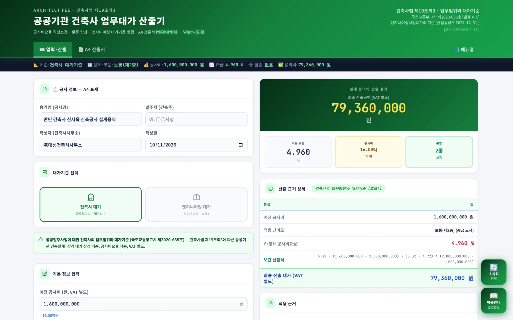
1234567- 1작업 탭: 입력·산출 · A4 산출서 · 매뉴얼
- 2요약 스트립: 기준·용도(부문)·공사비·요율·할증·용역비가 입력할 때마다 갱신
- 3공사 정보: 용역명·발주처·작성자·작성일 — A4 산출서 표제로 들어감
- 4대가기준 선택: 건축사 대가 / 엔지니어링 대가
- 5산출 결과: 최종 산출금액(VAT 별도)과 적용 요율·공사비·종별
- 6산출 근거 상세: 요율·보간 산출식·최종 대가
- 7오른쪽 아래 버튼: 「초기화」와 「이용안내」
| 탭 | 하는 일 | 본문 |
|---|---|---|
| ⌨️ 입력·산출 | 공사 정보·대가기준·공사비·용도·업무 조건 입력, 실시간 산출 결과와 산출 근거 | 3-1~3-9 · 3-12~3-13 |
| 📄 A4 산출서 | 용역비 산출서 미리보기 · 인쇄/PDF · JPG 저장 | 3-10~3-11 |
| 📘 매뉴얼 | 이 사용자 매뉴얼을 새 창으로 열기(인터넷 연결 필요) | 1-3 |
입력 화면은 왼쪽에 입력 카드(공사 정보 → 대가기준 선택 → 기본 정보 입력 → 업무 유형 선택 → 세부 조건 → 추가 업무 할증), 오른쪽에 결과 카드(산출 결과 → 산출 근거 상세 → 적용 근거)가 놓입니다. 계산 버튼은 없고, 값을 바꾸는 즉시 다시 계산됩니다.
1-2. 작업 탭·근거 표시
- 1입력·산출
- 2A4 산출서
- 3📘 매뉴얼 — 이 매뉴얼을 새 창으로(탭 막대 오른쪽 끝)
- 4근거 법령·고시 표시
헤더 오른쪽에는 근거 법령(건축사법 제19조의3)과 두 고시가 적혀 있습니다. 고시가 개정되면 이 표시와 4장 내용을 함께 확인하십시오.
1-3. 설치·보관·매뉴얼
| 항목 | 내용 |
|---|---|
| 설치(PWA) | 크롬·엣지 주소창의 설치 아이콘 또는 화면 아래 설치 안내를 누르면 바탕화면 앱으로 설치됩니다. 한 번 연 뒤에는 인터넷이 끊겨도 계산·출력이 됩니다. |
| 입력값 보관 | 입력값을 파일로 저장하는 기능은 없습니다. 새로고침하면 초기 예제로 돌아가므로, 산출이 끝나면 A4 산출서를 PDF 또는 JPG로 저장해 두십시오. |
| 매뉴얼 | 탭 막대 오른쪽 끝 「📘 매뉴얼」 — 인터넷 연결 시 새 창으로 열립니다. PDF는 이 문서 상단 「⤓ PDF」에서 받습니다. |
025분 따라하기
공사비 16억원 공동주택의 건축설계 대가를 예제로 6단계를 따라 하면 요율 4.960%, 설계 용역비 79,360,000원(VAT 별도) 산출서가 나옵니다. 예제 값은 프로그램을 처음 열었을 때 이미 들어 있으므로, 값을 바꿔 보며 결과가 달라지는 것을 확인하면 됩니다.
- 공사비 입력manminkim-eng.github.io/1architect-fee-app 를 열고 「기본 정보 입력」의 「예정 공사비(원, VAT 별도)」에 숫자만 적습니다. 예제는 1,600,000,000이며 아래에 「= 16.00억원」으로 환산해 보여 줍니다.
- 건축물 용도 선택「건축물 용도」에서 용도를 고르면 별표3에 따라 종별이 자동으로 정해집니다. 예제 공동주택은 「자동 판정: 제2종 보통」입니다.
- 업무 유형·도서작성 구분 선택「업무 유형 선택」에서 건축설계를, 「세부 조건」의 도서작성 구분에서 중급(공사비 산정)을 고릅니다. 공사감리를 고르면 도서작성 구분 없이 별표5 요율이 적용됩니다.
- 결과 확인오른쪽 「산출 결과」에 적용 요율 4.960%, 최종 산출금액 79,360,000원(VAT 별도)이 표시됩니다. 「산출 근거 상세」에서 10억원 5.32%와 20억원 4.72% 사이를 보간한 산출식을 확인합니다.
- A4 산출서 출력「공사 정보」에 용역명·발주처·작성자·작성일을 적고 「A4 산출서」 탭에서 「인쇄 / PDF 저장」 또는 「JPG 저장」을 누릅니다. 산출서에는 부가가치세 7,936,000원을 더한 합계 87,296,000원이 함께 나옵니다.
- 엔지니어링 대가로 전환토목·통신·플랜트 용역은 「대가기준 선택」에서 엔지니어링 대가를 누릅니다. 부문·업무 단계·분야를 고르면 같은 공사비 16억원에 건설부문 실시설계(도로) 요율 5.746%, 91,936,000원이 나옵니다.
03화면별 기능 상세
화면에 보이는 순서대로 각 카드가 하는 일과 입력 방법을 설명합니다.
3-1. 공사 정보
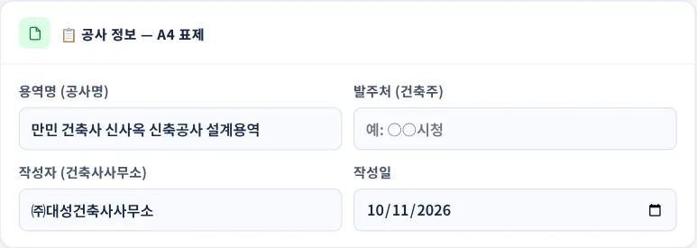
1234- 1용역명(공사명)
- 2발주처(건축주)
- 3작성자(건축사사무소)
- 4작성일
이 카드의 네 항목은 계산에 쓰이지 않고 A4 산출서의 표제와 작성자 서명란에 그대로 들어갑니다. 발주처를 비워 두면 산출서에는 「—」로 표시됩니다. 작성일은 오늘 날짜가 기본이며 달력에서 바꿀 수 있습니다.
3-2. 대가기준 선택
- 1건축사 대가 — 국토교통부고시 별표4·5
- 2엔지니어링 대가 — 엔지니어링사업대가의 기준 별표1~4
- 3선택한 기준의 근거 고시 안내
| 기준 | 근거 고시 | 대상 | 본문 |
|---|---|---|---|
| 건축사 대가 | 「공공발주사업에 대한 건축사의 업무범위와 대가기준」 국토교통부고시 제2020-635호(2020.9.14. 시행) | 건축설계(별표4) · 공사감리(별표5) | 3-3~3-11 |
| 엔지니어링 대가 | 「엔지니어링사업대가의 기준」 산업통상자원부고시 제2024-217호(2024.12.31. 시행) | 건설·통신·산업플랜트 설계·감리, 시공상세도작성비(별표1~4) | 3-12~3-13 |
기준을 바꾸면 아래 입력 카드와 결과 카드, A4 산출서 서식이 그 기준에 맞게 바뀝니다. 건축물 설계·감리는 건축사 대가를, 건축물이 아닌 토목·통신·플랜트 용역은 엔지니어링 대가를 씁니다.
3-3. 기본 정보 입력
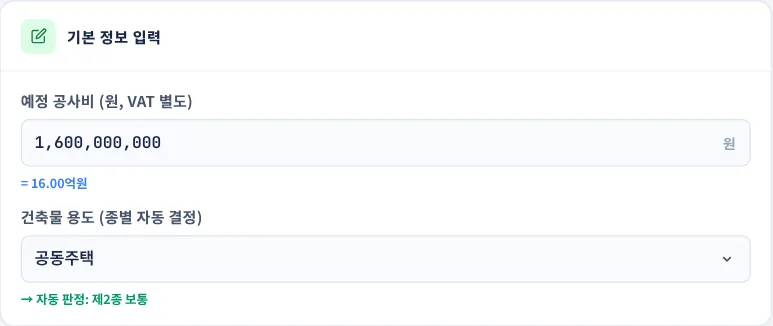
1234- 1예정 공사비(원, VAT 별도) — 숫자만 입력, 쉼표는 자동
- 2억원 환산 표시
- 3건축물 용도 — 별표3의 용도 39종
- 4종별 자동 판정 — 제1종 단순 · 제2종 보통 · 제3종 복잡
- 공사비는 발주자의 공사비 총예정금액(자재대 포함)에서 용지비, 보상비, 법률수속비, 부가가치세를 뺀 금액입니다(별표4·별표5 주). 관급자재대를 빠뜨리지 않도록 합니다.
- 용도를 고르면 종별이 자동으로 정해집니다. 용도 목록과 종별은 4-2 표와 같습니다.
- 한 건물에 종별이 다른 용도가 섞여 있으면 바닥면적이 가장 넓은 용도를 고릅니다. 면적이 같으면 높은 종별의 용도를 고릅니다(제11조제2항제3호).
3-4. 업무 유형·세부 조건
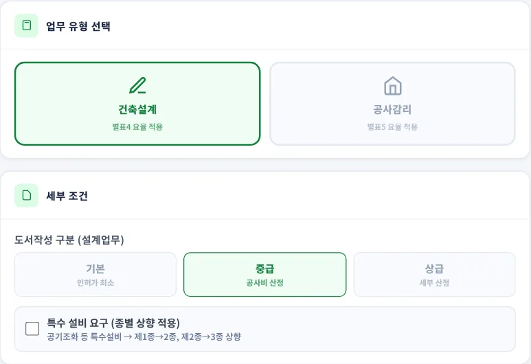
123456- 1건축설계 — 별표4 요율 적용
- 2공사감리 — 별표5 요율 적용
- 3도서작성 구분: 기본 — 인·허가에 필요한 최소한의 설계도서
- 4중급 — 공종별 공사비 산정을 위한 설계도서
- 5상급 — 세부적인 공사비 산정을 위한 구체적인 설계도서
- 6특수 설비 요구 — 종별 한 단계 상향
| 도서작성 구분 | 제10조제2항 |
|---|---|
| 기본 | 소규모 건축물 등과 같이 인·허가와 관련된 최소한의 설계도서만을 요구하는 경우 |
| 중급 | 공종별 공사비 산정을 위한 설계도서를 작성하는 경우 |
| 상급 | 중급에 비하여 세부적인 공사비 산정을 위한 구체적인 설계도서 작성을 요구하는 경우 |
- 도서작성 구분별로 작성하는 설계도서의 종류는 고시 별표2에 단계별(계획·중간·실시설계)로 정해져 있습니다. 과업지시서의 성과품 목록과 별표2를 대조해 구분을 정합니다.
- 「특수 설비 요구」를 켜면 제1종은 제2종으로, 제2종은 제3종으로 올려 요율을 적용합니다. 별표3의 「제1종 시설로서 공기조화 설비 등 특수설비를 요하는 시설은 제2종을 적용」, 「제2종 시설로서 특수구조 또는 공기조화 설비 등 특수설비를 요하는 시설은 제3종을 적용」에 따른 것입니다. 제3종은 더 올라가지 않습니다.
- 공사감리를 고르면 도서작성 구분과 추가 업무 할증은 쓰이지 않습니다.
3-5. 추가 업무 할증
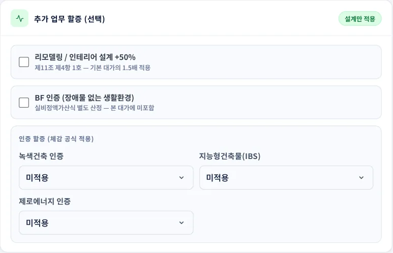
12345- 1리모델링 / 인테리어 설계 +50% — 제11조제4항제1호(기본 대가의 1.5배)
- 2BF 인증 — 대가에 더하지 않고 안내 문구만 표시
- 3녹색건축 인증 — 최우수 9.5 · 우수 9.0 · 우량 8.5 · 일반 8.0%
- 4지능형건축물(IBS) — 1등급 7.0 ~ 5등급 5.0%
- 5제로에너지 인증 — 1등급 10.0 ~ 5등급 8.0%
- 인증을 2개 이상 고르면 요율이 큰 순서로 A + B/2 + C/3 으로 합산합니다(제11조제4항제6호). 예는 3-8.
- BF(장애물 없는 생활환경) 인증 관련 설계는 별도 계상하지 않으며, 인증 심의 대응 비용만 실비정액가산식으로 따로 산정합니다(제11조제4항제7호). 그래서 체크해도 금액은 바뀌지 않습니다.
- 에너지효율등급 인증 가산(제11조제4항제5호 가목)은 선택 항목에 없습니다. 해당하면 4-6 표의 비율로 따로 계산해 더합니다.
3-6. 산출 결과
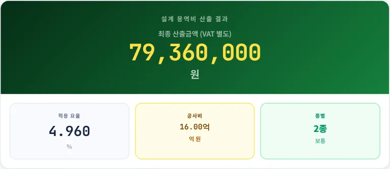
1234- 1최종 산출금액(VAT 별도)
- 2적용 요율(%) — 소수점 셋째 자리까지
- 3공사비(억원)
- 4종별
대가 = 공사비 × 요율이며 천원 미만은 버립니다. 할증이 있으면 금액 아래에 「기본 ○원 + 조정 ○원」이 함께 표시됩니다.
3-7. 산출 근거 상세
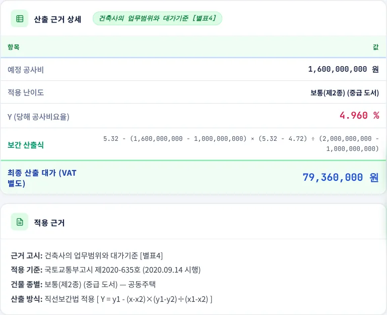
123456- 1예정 공사비
- 2적용 난이도 — 종별과 도서작성 구분
- 3Y(당해 공사비요율)
- 4보간 산출식 — 아래 구간과 위 구간의 요율로 계산
- 5최종 산출 대가(VAT 별도)
- 6적용 근거 — 근거 고시·종별·산출 방식
x는 당해 공사비, x2·y1은 아래 구간의 공사비와 요율, x1·y2는 위 구간의 공사비와 요율입니다. 공사비가 표의 구간 금액과 같으면 보간 없이 그 요율을 그대로 씁니다.
3-8. 인증 할증 예
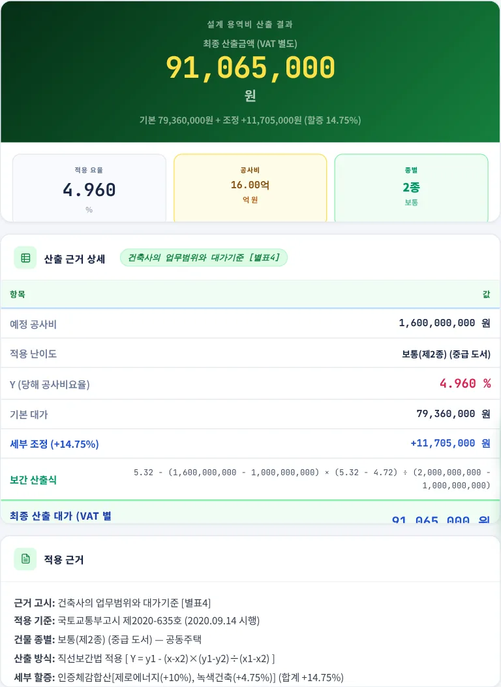
12- 1최종 산출금액 91,065,000원 — 기본 79,360,000원 + 조정 11,705,000원
- 2세부 조정(+14.75%)과 적용 근거의 할증 내역
3-9. 공사감리 대가
- 1요약 스트립 — 요율 1.170%
- 2감리 용역비 18,720,000원(VAT 별도)
- 3별표5 보간 산출식 — 10억원 1.23%와 20억원 1.13% 사이
별표5 요율은 건축법 시행령 제19조제5항에 따라 수시 또는 필요한 때 공사현장에서 수행하는 감리업무(제5조제2호 가목)의 대가입니다(제14조제1항). 건축사보를 공사기간 동안 현장에 두는 감리 등(제5조제2호 나목~라목)은 실비정액가산식으로 따로 산정합니다(제14조제2항).
3-10. A4 산출서 출력
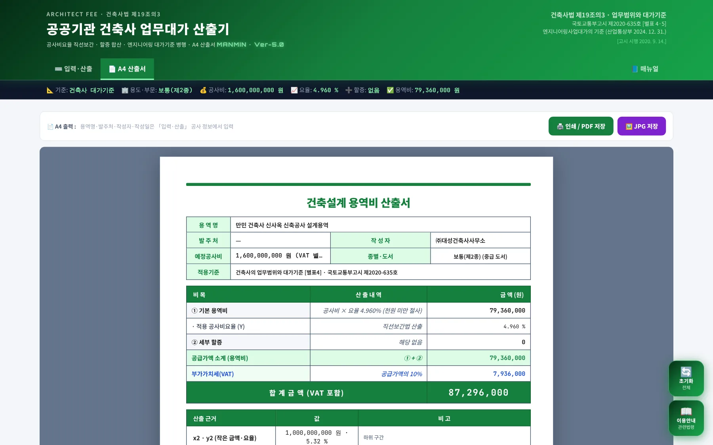
123- 1「인쇄 / PDF 저장」 — 브라우저 인쇄 창. 대상 프린터를 「PDF로 저장」으로 바꾸면 PDF
- 2「JPG 저장」 — 산출서를 JPG 이미지로 저장
- 3A4 산출서 미리보기 — 화면·인쇄·JPG가 같은 내용
- 공사비를 넣지 않은 상태에서는 「먼저 공사비를 입력하세요」 안내가 나오고 입력 탭으로 돌아갑니다.
- JPG 파일 이름은
건축사_업무대가_산출서_MANMIN-Ver5.0_날짜_시각.jpg형식입니다. - PDF에 색이 빠지면 인쇄 창 「설정 더보기」의 「배경 그래픽」을 켭니다.
3-11. A4 산출서 구성
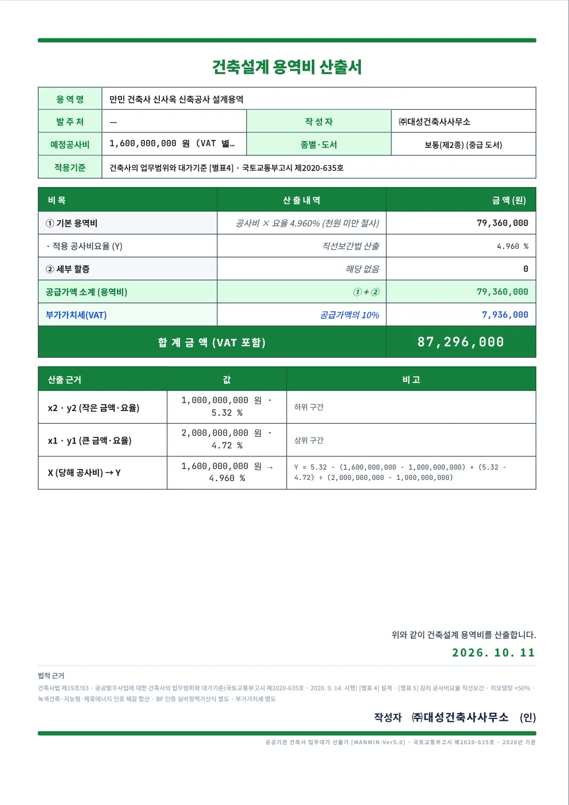
12345- 1용역 개요 — 용역명·발주처·작성자·예정공사비·종별·도서·적용기준
- 2산출 내역 — ① 기본 용역비 ② 세부 할증, 공급가액 소계, 부가가치세, 합계금액(VAT 포함)
- 3산출 근거 — 아래·위 구간의 금액·요율과 보간 산출식
- 4법적 근거
- 5작성일 · 작성자 서명란
입력 화면의 금액은 부가가치세 별도이고, 산출서에는 공급가액의 10%를 부가가치세로 더한 합계금액이 나옵니다(예제 79,360,000 + 7,936,000 = 87,296,000원). 제목은 업무에 따라 「건축설계 용역비 산출서」 또는 「공사감리 용역비 산출서」로 바뀝니다.
3-12. 엔지니어링 대가 입력
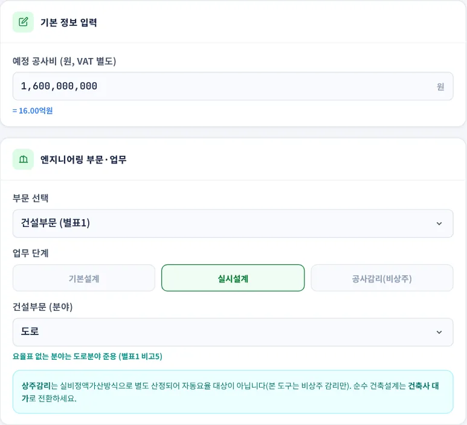
1234- 1예정 공사비(원, VAT 별도)
- 2부문 선택 — 건설부문(별표1) · 통신부문(별표2) · 산업플랜트부문(별표3) · 시공상세도작성비(별표4)
- 3업무 단계 — 기본설계 · 실시설계 · 공사감리(비상주)
- 4분야 — 부문·업무에 따라 선택 항목이 바뀜
| 부문 | 업무 단계 | 분야·선택 항목 |
|---|---|---|
| 건설부문 (별표1) | 기본설계 · 실시설계 · 공사감리 | 기본설계: 도로·철도·항만·상수도 / 실시설계: 도로·철도·항만·상수도·하천 |
| 통신부문 (별표2) | 기본설계 · 실시설계 · 공사감리 | 그룹1 · 그룹2 · 그룹3 · 그룹4 |
| 산업플랜트부문 (별표3) | 기본설계 · 실시설계 · 공사감리 | 화학·가스 플랜트(요율 × 1.250) · 부대시설(요율 × 0.813) 선택 |
| 시공상세도작성비 (별표4) | 작성비 | 시설물 난이도 단순 · 보통 · 복잡 |
이 화면의 공사감리는 요율로 산정하는 비상주 감리입니다. 상주감리는 실비정액가산방식으로 따로 산정하므로 프로그램의 계산 대상이 아닙니다. 건축물 설계는 「건축사 대가」로 돌아가 계산합니다.
3-13. 엔지니어링 결과·산출서
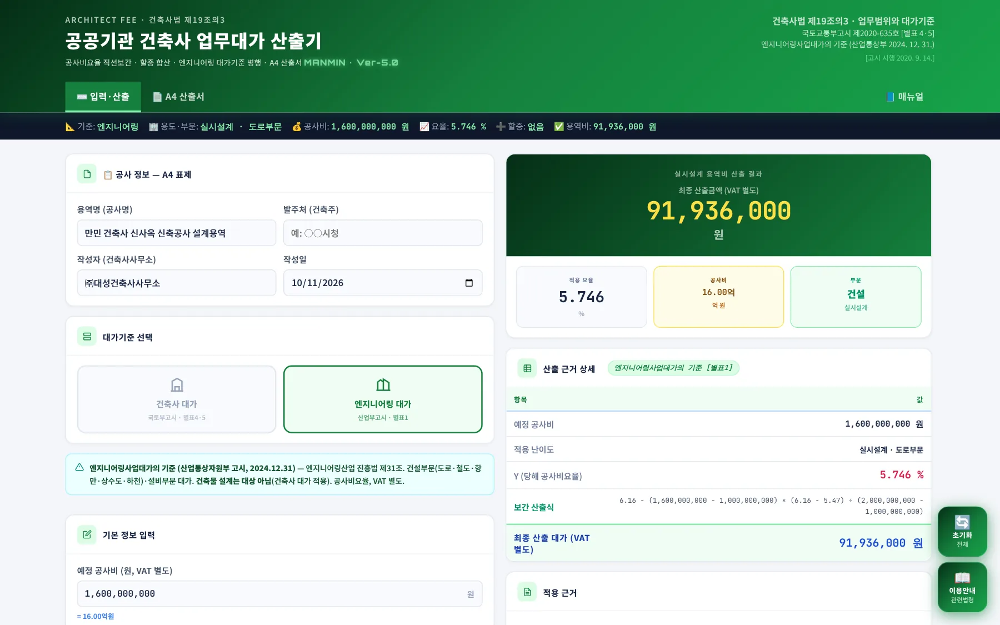
1234- 1대가기준 선택 — 엔지니어링 대가
- 2요약 스트립 — 실시설계 · 도로부문, 요율 5.746%
- 3산출 결과 91,936,000원(VAT 별도)
- 4산출 근거 — 10억원 6.16%와 20억원 5.47% 사이 보간
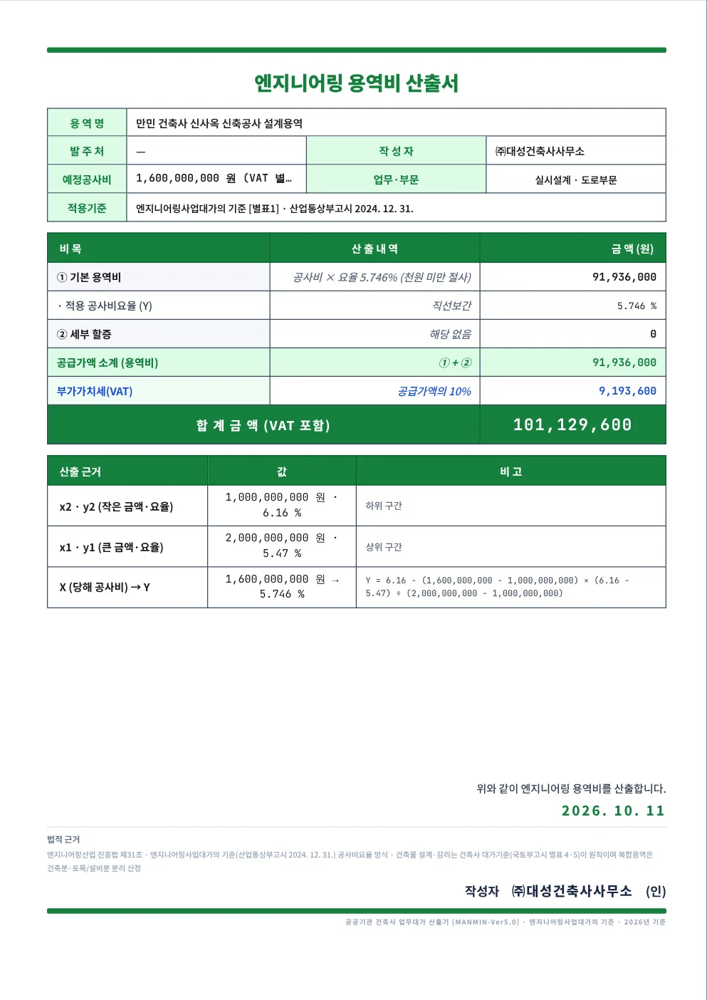
엔지니어링 대가를 고르면 A4 산출서 제목이 「엔지니어링 용역비 산출서」로, 적용기준이 「엔지니어링사업대가의 기준」 해당 별표로 바뀝니다.
공사비가 5,000억원을 넘으면 별표 비고의 공식으로 요율을 계산하고, 표의 가장 작은 공사비 이하이면 첫 구간 요율을 그대로 씁니다.
입력 화면의 「적용 근거」 카드에도 엔지니어링사업대가의 기준 고시 번호와 부문·업무가 표시됩니다.
3-14. 이용안내·초기화
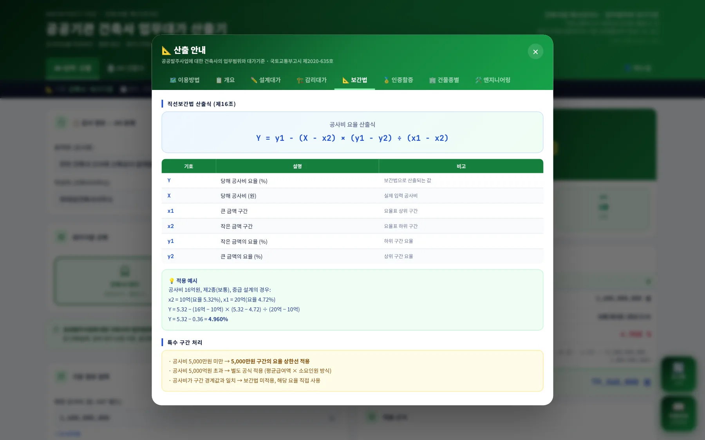
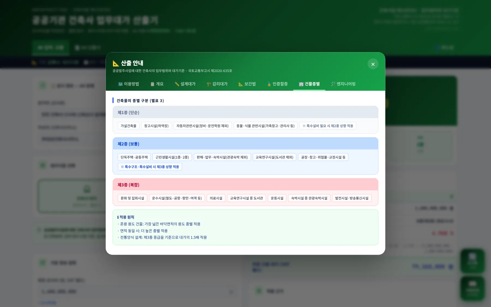
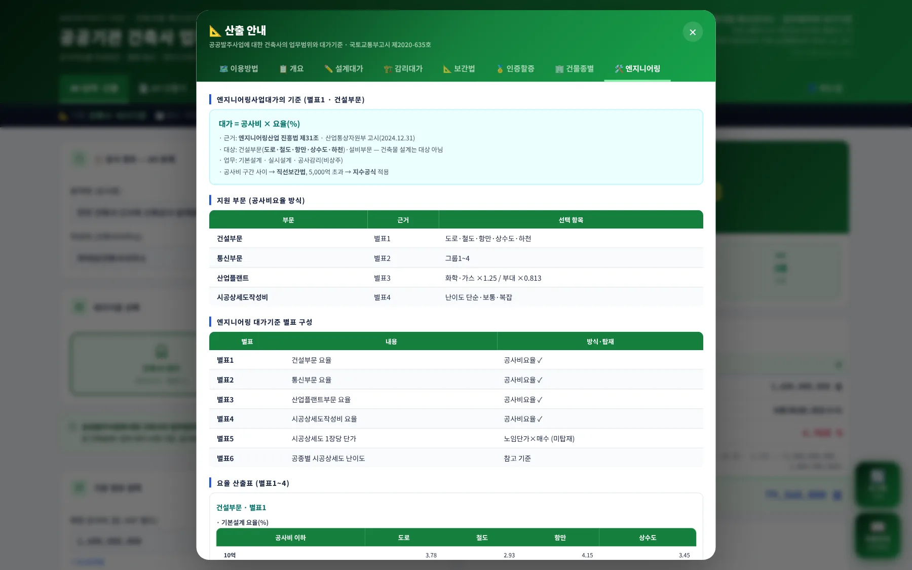
오른쪽 아래 「이용안내」를 누르면 이용방법·개요·설계대가·감리대가·보간법·인증할증·건물종별·엔지니어링 8개 탭으로 나뉜 안내 창이 열립니다. 「초기화」는 모든 입력을 비웁니다. 되돌린 뒤에는 복구할 수 없으므로 필요한 산출서는 먼저 저장하십시오. 초기화 후에는 공사비가 비어 있어 결과가 표시되지 않습니다.
3-15. 모바일
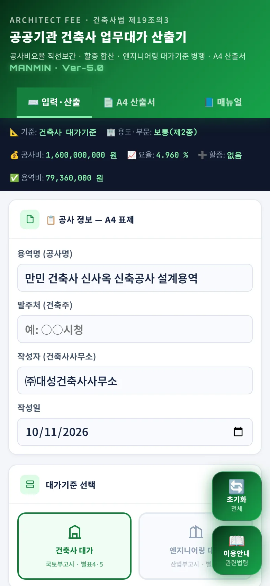
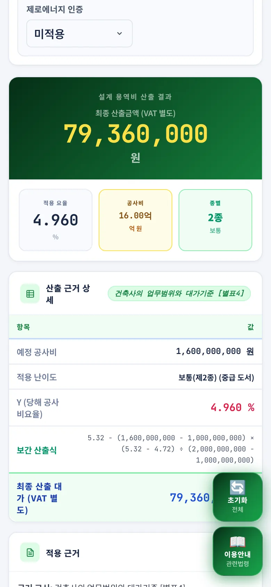
휴대폰에서는 카드가 한 줄로 쌓입니다. 회의 자리에서 공사비만 바꿔 대가를 바로 확인할 때 씁니다.
04기술기준 해설
「공공발주사업에 대한 건축사의 업무범위와 대가기준」 국토교통부고시 제2020-635호(2020.9.14. 시행)과 「엔지니어링사업대가의 기준」 산업통상자원부고시 제2024-217호(2024.12.31. 시행) 원문에서 대가 산출에 직접 쓰이는 조문과 별표를 정리했습니다.
4-1. 적용 범위와 산출 원칙
| 조항 | 내용(요지) |
|---|---|
| 제1조 | 건축사법 제19조의3에 따라 건축사의 업무범위와 대가기준을 정함 |
| 제2조 | 건축사법 제19조의3제1항 각 호의 자(발주자)가 제5조에 따른 건축사의 업무를 발주하는 경우에 적용 |
| 제8조제1항제1호 | 대가는 발주자가 사업의 특성 및 업무범위를 고려하여 공사비요율 또는 실비정액가산식을 적용 |
| 제8조제1항제2호 | 공사비요율을 적용할 경우 추가업무비용은 별도의 실비로 계상 |
| 제8조제1항제3호 | 부가가치세는 부가가치세법에서 정하는 바에 따라 계상 |
| 제11조제2항 | 건축설계업무(계획·중간·실시설계)의 대가는 별표4를 적용하여 산정 |
| 제14조제1항 | 제5조제2호 가목의 건축공사감리업무 대가는 별표5를 적용하여 산정 |
4-2. 종별·도서작성 구분
제10조제1항 — 대가요율을 산정하는 데 필요한 건축물의 종별은 별표3과 같이 건축물의 난이도에 따라 구분합니다. 프로그램의 「건축물 용도」 목록은 별표3과 같습니다.
| 종별 | 건축물의 종류 (별표3) | 비고 |
|---|---|---|
| 제1종(단순) | 가설건축물 · 창고시설(하역장) · 자동차관련시설(정비공장,운전학원·정비학원 제외) · 동물 및 식물관련시설(가축용 창고,관리사,가축시장,버섯재배사) · 기타 제1종 용도와 유사한 것 | 제1종 시설로서 공기조화 설비 등 특수설비를 요하는 시설은 제2종을 적용 |
| 제2종(보통) | 공작물(굴뚝·옹벽·고가수조 등) · 단독주택 · 공동주택 · 제1종 근린생활시설 · 제2종 근린생활시설 · 판매시설 · 장례식장 · 교육연구시설(도서관 제외) · 노유자시설 · 수련시설 · 업무시설 · 숙박시설(관광숙박시설 제외) · 위락시설 · 공장 · 창고시설(냉장·냉동창고 포함) · 위험물저장 및 처리시설 · 자동차 관련시설(정비공장,운전학원,정비학원) · 동물 및 식물관련시설 · 분뇨 및 쓰레기처리시설 · 교정 및 군사시설 · 묘지관련시설(화장장 제외) · 관광휴게시설(관망탑 제외) · 기타 제2종 용도와 유사한 것 | 제2종 시설로서 특수구조 또는 공기조화 설비 등 특수설비를 요하는 시설은 제3종을 적용 |
| 제3종(복잡) | 문화 및 집회시설 · 운수시설(철도시설,공항시설,항만시설,종합여객시설 등) · 의료시설 · 교육연구시설 중 도서관 · 운동시설 · 숙박시설 중 관광숙박시설 · 발전시설(발전소,집단에너지 공급시설 포함) · 방송통신시설(방송·통신시설,촬영시설) · 묘지관련시설 중 화장장 · 관광휴게시설 중 관망탑 · 기타 제3종 용도와 유사한 것 | — |
제10조제2항 — 별표4를 적용할 때의 도서작성 구분은 기본·중급·상급이며(3-4 표), 구분별 설계도서의 세부 내용은 별표2에 따릅니다.
4-3. 별표4 건축설계 대가요율
단위 %. 프로그램의 건축설계 요율은 이 표에서 나옵니다.
| 공사비 | 3종 상급 | 3종 중급 | 3종 기본 | 2종 상급 | 2종 중급 | 2종 기본 | 1종 상급 | 1종 중급 | 1종 기본 |
|---|---|---|---|---|---|---|---|---|---|
| 5,000만원 이하 | 12.55 | 10.46 | 8.36 | 11.41 | 9.51 | 7.61 | 10.22 | 8.51 | 6.81 |
| 1억원 | 11.48 | 9.56 | 7.65 | 10.43 | 8.69 | 6.95 | 9.38 | 7.82 | 6.25 |
| 2억원 | 9.99 | 8.33 | 6.66 | 9.08 | 7.57 | 6.05 | 8.16 | 6.80 | 5.44 |
| 3억원 | 8.68 | 7.23 | 5.78 | 7.88 | 6.57 | 5.26 | 7.08 | 5.90 | 4.72 |
| 5억원 | 7.90 | 6.58 | 5.26 | 7.18 | 5.98 | 4.79 | 6.46 | 5.38 | 4.30 |
| 10억원 | 7.03 | 5.86 | 4.68 | 6.39 | 5.32 | 4.26 | 5.75 | 4.79 | 3.83 |
| 20억원 | 6.22 | 5.19 | 4.15 | 5.66 | 4.72 | 3.77 | 5.09 | 4.24 | 3.40 |
| 30억원 | 5.91 | 4.93 | 3.94 | 5.38 | 4.48 | 3.58 | 4.84 | 4.03 | 3.23 |
| 50억원 | 5.72 | 4.76 | 3.81 | 5.20 | 4.33 | 3.46 | 4.68 | 3.90 | 3.12 |
| 100억원 | 5.58 | 4.65 | 3.72 | 5.07 | 4.22 | 3.38 | 4.56 | 3.80 | 3.04 |
| 200억원 | 5.42 | 4.51 | 3.61 | 4.92 | 4.10 | 3.28 | 4.43 | 3.69 | 2.96 |
| 300억원 | 5.32 | 4.44 | 3.55 | 4.84 | 4.03 | 3.23 | 4.36 | 3.63 | 2.91 |
| 500억원 | 5.25 | 4.38 | 3.50 | 4.77 | 3.98 | 3.18 | 4.30 | 3.58 | 2.87 |
| 1,000억원 | 5.14 | 4.29 | 3.43 | 4.68 | 3.90 | 3.12 | 4.21 | 3.50 | 2.80 |
| 2,000억원 | 5.06 | 4.22 | 3.38 | 4.60 | 3.84 | 3.07 | 4.14 | 3.45 | 2.76 |
| 3,000억원 | 5.01 | 4.17 | 3.34 | 4.55 | 3.79 | 3.03 | 4.10 | 3.42 | 2.73 |
| 5,000억원 | 4.93 | 4.11 | 3.28 | 4.48 | 3.73 | 2.99 | 4.03 | 3.36 | 2.69 |
4-4. 별표5 건축공사감리 대가요율
단위 %. 프로그램의 공사감리 요율은 이 표에서 나옵니다.
| 공사비 | 제3종(복잡) | 제2종(보통) | 제1종(단순) |
|---|---|---|---|
| 5천만원 이하 | 2.46 | 2.24 | 2.02 |
| 1억원 | 2.32 | 2.11 | 1.90 |
| 2억원 | 1.85 | 1.68 | 1.51 |
| 3억원 | 1.70 | 1.54 | 1.39 |
| 5억원 | 1.57 | 1.43 | 1.29 |
| 10억원 | 1.35 | 1.23 | 1.11 |
| 20억원 | 1.24 | 1.13 | 1.02 |
| 30억원 | 1.20 | 1.09 | 0.98 |
| 50억원 | 1.18 | 1.07 | 0.96 |
| 100억원 | 1.14 | 1.04 | 0.94 |
| 200억원 | 1.11 | 1.01 | 0.91 |
| 300억원 | 1.10 | 1.00 | 0.90 |
| 500억원 | 1.08 | 0.98 | 0.88 |
| 1,000억원 | 1.07 | 0.97 | 0.87 |
| 2,000억원 | 1.05 | 0.95 | 0.86 |
| 3,000억원 | 1.03 | 0.94 | 0.85 |
| 5,000억원 | 1.02 | 0.93 | 0.84 |
4-5. 직선보간과 공사비 범위
| 근거 | 내용 | 프로그램 처리 |
|---|---|---|
| 제16조제1항 | 별표4 및 별표5의 기준에 따라 대가를 산정할 때 공사비가 중간부분에 있는 경우의 요율은 직선보간법에 따라 산정 | 구간 사이 공사비는 자동 보간 — 요율은 소수점 셋째 자리까지 |
| 제16조제2항 | 대가요율 산정 시 공사비가 5,000만원 미만인 경우 5,000만원으로 간주하여 산출 | 5,000만원 이하는 표의 첫 구간 요율을 적용 |
| 제16조제3항 | 공사비가 5,000억원을 초과하는 경우의 요율은 별도 공식(평균급여액·제비율 사용)으로 산출 | 공식 미탑재 — 5,000억원 요율을 적용한 참고값과 함께 붉은 안내 문구를 화면·산출서에 표시 |
| 별표4·별표5 주 | 「공사비」라 함은 발주자의 공사비 총예정금액(자재대 포함) 중 용지비, 보상비, 법률수속비 및 부가가치세를 제외한 일체의 금액 | 입력란에 이 금액을 넣음 |
4-6. 추가 업무 대가
제11조제4항 — 발주자의 요청이 있을 경우의 설계업무(제5조제1호 라목) 대가입니다. 「대가」는 제11조제2항에 따라 산출된 건축설계 대가를 말합니다.
| 제11조제4항 | 업무 | 대가 | 프로그램 |
|---|---|---|---|
| 제1호 | 리모델링 설계 · 인테리어 설계 | 대가의 1.5배 | 「리모델링 / 인테리어 설계 +50%」 |
| 제2호 | 음향·차음·방음·방진설계, 3D 모델링, 모형제작, VE 설계, Fast track, 흙막이 상세도(굴토깊이 10m 이상), 상세시공도서, 각종 심의 대응, BIM 설계 | 실비정액가산식 | 계산하지 않음 |
| 제3호 | 녹색건축 인증 관련 설계 | 최우수 9.5% · 우수 9% · 우량 8.5% · 일반 8% | 「녹색건축 인증」 |
| 제4호 | 지능형건축물 인증 관련 설계 | 1등급 7% · 2등급 6.5% · 3등급 6% · 4등급 5.5% · 5등급 5% | 「지능형건축물(IBS)」 |
| 제5호 가목 | 에너지효율등급 인증 관련 설계 | 1+++~1++등급 7.5% · 1+~1등급 7% · 2~3등급 6.5% · 4~5등급 6% · 6~7등급 5.5% (제로에너지건축물 인증을 적용하면 가목은 적용하지 않음) | 선택 항목 없음 — 따로 계산 |
| 제5호 나목 | 제로에너지건축물 인증 관련 설계 | 1등급 10% · 2등급 9.5% · 3등급 9% · 4등급 8.5% · 5등급 8% | 「제로에너지 인증」 |
| 제6호 | 인증 2개 이상을 설계에 반영 | 추가설계대가 요율 = A + 1/2 B + 1/3 C (A 최상위값 · B 차상위값 · C 최하위값) | 자동 합산 |
| 제7호 | 장애물 없는 생활환경(BF) 인증 관련 설계 | 별도 계상하지 아니하고, 인증을 받기 위한 심의 대응 비용은 실비정액가산식 | 「BF 인증」 — 안내만 표시 |
4-7. 프로그램이 계산하지 않는 대가
| 조항 | 내용(요지) |
|---|---|
| 제11조제1항 | 기획업무 — 별표1의 업무 내용에 따라 설계대가의 3% 이상 8% 이하 범위에서 별도 산정 |
| 제11조제2항제1호 | 하나의 대지에 규모·구조가 다른 2동 이상 신축 — 동마다 산출한 대가를 합산(동별로 따로 계산해 더함) |
| 제11조제2항제2호 | 하나의 대지에 동일한 설계로 2동 이상 신축 — 대가 = A(1 + 1/2 + 1/3 + … + 1/n), A는 1동의 건축설계 대가, n은 동수 |
| 제11조제2항제4호 | 전통양식설계 — 산출된 대가의 1.5배, 종별구분은 제3종 중급 적용 |
| 제11조제2항제5호 | 공사비 200억원 이상 사업 중 상징성 등이 있는 건축사업 — 총 설계비의 10% 이내에서 계획설계비 추가 반영 가능 |
| 제11조제3항 | 사후설계관리업무 — 실비정액가산식 |
| 제11조제5항 | 건축허가를 득한 건축물의 설계변경 — 실비정액가산식 |
| 제13조제1호 | 구조·토목·기계·전기·소방·조경 등을 분리수행하도록 위탁하고 건축사에게 전체를 종합 조정하게 하는 경우 — 분리 위탁한 설계대가의 20% 증액 |
| 제14조제2항 | 제5조제2호 나목~라목의 공사감리업무(건축사보 현장 배치 감리 등) — 실비정액가산식 |
| 제15조 | 건설사업관리(CM)업무 등 — 실비정액가산식 |
제6조제5항의 단계별 업무비율(계획·중간·실시설계)과 제12조의 단계별 지급은 원문 고시의 표로 확인합니다. 프로그램은 설계 전체 대가를 한 금액으로 산출합니다.
4-8. 엔지니어링사업대가의 기준
「엔지니어링사업대가의 기준」 산업통상자원부고시 제2024-217호(2024.12.31. 시행) 제19조 — 공사비가 요율표의 각 단위 중간에 있을 때의 요율은 직선보간법에 따라 산정합니다. 아래는 별표1 건설부문 설계 요율(단위 %)입니다.
별표1 건설부문 — 실시설계
| 공사비 | 도로 | 철도 | 항만 | 상수도 | 하천 |
|---|---|---|---|---|---|
| 10억원 | 6.16 | 4.10 | 7.65 | 8.27 | 5.37 |
| 20억원 | 5.47 | 3.88 | 6.74 | 7.28 | 4.71 |
| 30억원 | 5.10 | 3.76 | 6.25 | 6.75 | 4.36 |
| 50억원 | 4.67 | 3.62 | 5.69 | 6.15 | 3.96 |
| 100억원 | 4.15 | 3.43 | 5.01 | 5.41 | 3.47 |
| 200억원 | 3.68 | 3.25 | 4.41 | 4.76 | 3.04 |
| 300억원 | 3.43 | 3.15 | 4.09 | 4.42 | 2.81 |
| 500억원 | 3.15 | 3.03 | 3.73 | 4.03 | 2.55 |
| 1,000억원 | 2.79 | 2.87 | 3.28 | 3.54 | 2.24 |
| 2,000억원 | 2.48 | 2.72 | 2.89 | 3.12 | 1.96 |
| 3,000억원 | 2.31 | 2.64 | 2.68 | 2.89 | 1.82 |
| 5,000억원 | 2.12 | 2.54 | 2.44 | 2.64 | 1.65 |
별표1 건설부문 — 기본설계
| 공사비 | 도로 | 철도 | 항만 | 상수도 |
|---|---|---|---|---|
| 10억원 | 3.78 | 2.93 | 4.15 | 3.45 |
| 20억원 | 3.33 | 2.69 | 3.64 | 3.07 |
| 30억원 | 3.10 | 2.55 | 3.37 | 2.86 |
| 50억원 | 2.82 | 2.39 | 3.06 | 2.63 |
| 100억원 | 2.49 | 2.19 | 2.68 | 2.34 |
| 200억원 | 2.20 | 2.01 | 2.35 | 2.08 |
| 300억원 | 2.04 | 1.90 | 2.18 | 1.94 |
| 500억원 | 1.86 | 1.78 | 1.98 | 1.78 |
| 1,000억원 | 1.64 | 1.63 | 1.74 | 1.58 |
| 2,000억원 | 1.45 | 1.50 | 1.52 | 1.41 |
| 3,000억원 | 1.35 | 1.42 | 1.41 | 1.32 |
| 5,000억원 | 1.23 | 1.33 | 1.28 | 1.21 |
| 별표 | 프로그램에 들어 있는 요율 |
|---|---|
| 별표1 건설부문 | 기본설계 · 실시설계(10억원~5,000억원 12구간) · 공사감리(5,000만원~5,000억원 17구간) |
| 별표2 통신부문 | 기본설계 · 실시설계 · 공사감리 — 그룹1~4, 5,000만원~5,000억원 17구간 |
| 별표3 산업플랜트부문 | 기본설계 · 실시설계 · 공사감리 — 17구간. 화학·가스 플랜트는 요율 × 1.250, 부대시설은 요율 × 0.813 |
| 별표4 시공상세도작성비 | 시설물 난이도 단순 · 보통 · 복잡 — 1억원~5,000억원 16구간 |
통신·산업플랜트·시공상세도 요율표 전체는 「이용안내」 창의 엔지니어링 탭(3-14)과 원문 고시에서 확인합니다. 프로그램에 든 별표1~4 요율과 5,000억원 초과 공식의 계수는 원문과 대조했습니다.
4-9. 적용 시점
| 구분 | 내용 |
|---|---|
| 건축사 대가기준 | 국토교통부고시 제2020-635호 — 2020.9.14. 발령·시행(부칙: 발령한 날부터 시행) |
| 엔지니어링사업대가의 기준 | 산업통상자원부고시 제2024-217호 — 2024.12.31. 시행(소관부처 현재 산업통상부) |
| 재검토기한 | 건축사 대가기준 제18조 — 2021년 1월 1일을 기준으로 매 3년이 되는 시점마다 타당성을 검토 |
05실무 작업 방법
발주 단계에 따라 이 도구를 쓰는 순서와, 산출서를 문서에 넣기 전에 확인할 사항입니다.
5-1. 발주 단계별 절차
| 단계 | 작업 | 쓰는 화면 |
|---|---|---|
| 사업 구상·예산 요구 | 추정 공사비로 설계·감리 대가를 개략 산출. 도서작성 구분과 인증 목표에 따른 대가 차이를 비교 | 입력·산출 |
| 과업지시서 작성 | 성과품 목록을 별표2와 대조해 도서작성 구분 확정. 추가 업무(인증·리모델링 등) 범위 확정 | 세부 조건 · 추가 업무 할증 |
| 설계용역 발주 | 확정 공사비로 산출서 출력. 실비정액가산식 대상 업무는 따로 산정해 합산 | A4 산출서 |
| 감리용역 발주 | 업무 유형을 공사감리로 바꿔 별표5 대가 산출. 건축사보 현장 배치 감리는 실비정액가산식으로 별도 산정 | 입력·산출 · A4 산출서 |
| 토목·통신·플랜트 용역 | 대가기준을 엔지니어링 대가로 바꿔 부문·업무·분야별 대가 산출 | 대가기준 선택 |
| 계약 변경 | 공사비가 바뀌면 바뀐 공사비로 다시 산출해 대가 조정 근거로 사용(제9조) | 입력·산출 |
5-2. 제출 전 확인
| 확인 항목 | 내용 |
|---|---|
| 공사비 범위 | 자재대(관급자재 포함)를 넣고 용지비·보상비·법률수속비·부가가치세를 뺐는지(별표4·별표5 주) |
| 용도·종별 | 복합 용도이면 바닥면적이 가장 넓은 용도의 종별인지(제11조제2항제3호). 특수설비 상향 적용이 맞는지(별표3) |
| 도서작성 구분 | 과업지시서 성과품이 별표2의 기본·중급·상급 어디에 해당하는지 |
| 동수 | 2동 이상이면 동별 합산 또는 동일 설계 체감식(제11조제2항제1호·제2호)으로 따로 계산했는지 |
| 인증 가산 | 인증 종류·등급이 과업 내용과 같은지. 에너지효율등급 인증은 따로 계산했는지(4-6) |
| 별도 산정 업무 | 기획업무, 사후설계관리, BIM·VE·심의 대응, 상주감리 등 실비정액가산식 업무를 빠뜨리지 않았는지(4-7) |
| 검산 | 산출서의 공급가액이 공사비 × 요율(천원 미만 절사)과 같은지, 부가가치세·합계가 맞는지 |
| 5,000억원 초과 | 해당하면 제16조제3항 공식으로 요율을 따로 구했는지 |
| 고시 번호 | 산출서의 적용기준 고시가 현행인지(4-9) |
5-3. 예제 결과
| 구분 | 조건 | 요율 | 대가(VAT 별도) | VAT 포함 |
|---|---|---|---|---|
| 건축설계 | 16억원 · 공동주택(제2종) · 중급 | 4.960% | 79,360,000원 | 87,296,000원 |
| 건축설계 + 인증 | 위 조건 + 녹색건축 최우수 · 제로에너지 1등급(+14.75%) | 4.960% | 91,065,000원 | 100,171,500원 |
| 공사감리 | 16억원 · 공동주택(제2종) | 1.170% | 18,720,000원 | 20,592,000원 |
| 엔지니어링 | 16억원 · 건설부문 · 실시설계 · 도로 | 5.746% | 91,936,000원 | 101,129,600원 |
06문제 해결 · FAQ
| 증상·질문 | 해결 |
|---|---|
| 결과가 표시되지 않습니다 | 예정 공사비가 비어 있거나 0입니다. 숫자를 넣으면 바로 계산됩니다. |
| 할증 카드를 골랐는데 금액이 그대로입니다 | 업무 유형이 공사감리이면 할증은 적용되지 않습니다. BF 인증은 대가에 더하지 않고 안내만 표시합니다(3-5). |
| 인증 두 개의 합이 단순 합계와 다릅니다 | 2개 이상이면 큰 순서로 A + B/2 + C/3 으로 합산합니다(제11조제4항제6호). |
| 요율이 표에 없는 값입니다 | 공사비가 구간 사이에 있어 직선보간한 값입니다. 「산출 근거 상세」의 보간 산출식으로 확인합니다(3-7). |
| 이전에 뽑은 산출서와 1,000원 다릅니다 | v5.0.4에서 천원 미만 절사 계산을 정정했습니다. 이전 버전은 일부 입력에서 1,000원 적게 표시했습니다. 지금 표시되는 금액이 공사비 × 요율(천원 미만 절사)과 같습니다. |
| 공사비가 5,000억원을 넘습니다 | 건축사 대가는 5,000억원 요율을 적용한 참고값과 안내 문구가 표시됩니다. 제16조제3항 공식으로 따로 산정하십시오(4-5). |
| 새로고침하니 입력이 사라졌습니다 | 입력값 파일 저장 기능이 없습니다. 산출서를 PDF·JPG로 저장해 두십시오(1-3). |
| PDF에 배경색이 없습니다 | 인쇄 창 「설정 더보기」에서 「배경 그래픽」을 켭니다. |
| 상주감리·건설사업관리 대가는 어디서 계산합니까 | 이 프로그램의 대상이 아닙니다. 실비정액가산식(제17조)으로 산정합니다(4-7). |
| 매뉴얼 버튼이 열리지 않습니다 | 매뉴얼은 인터넷 연결이 필요합니다. 오프라인이면 안내 문구만 표시됩니다. |
부록참고 자료
A1. 예제 입력값
| 구분 | 값 |
|---|---|
| 공사 정보 | 용역명 만민 건축사 신사옥 신축공사 설계용역 · 발주처 비움 · 작성자 ㈜대성건축사사무소 |
| 대가기준 | 건축사 대가 |
| 예정 공사비 | 1,600,000,000원 (VAT 별도) |
| 건축물 용도 | 공동주택 → 제2종 보통 |
| 업무 유형 · 도서작성 구분 | 건축설계 · 중급 · 특수 설비 요구 끔 |
| 추가 업무 할증 | 모두 끔 |
| 결과 | 요율 4.960% · 79,360,000원 (VAT 포함 87,296,000원) |
| 인증 할증 비교(3-8) | 녹색건축 최우수 + 제로에너지 1등급 → +14.75% · 91,065,000원 |
| 공사감리 비교(3-9) | 업무 유형만 공사감리로 변경 → 요율 1.170% · 18,720,000원 |
| 엔지니어링 비교(3-13) | 엔지니어링 대가 · 건설부문 · 실시설계 · 도로 → 요율 5.746% · 91,936,000원 |
A2. 버전 변경 내역
| 판 | 변경 내용 |
|---|---|
| Ver-5.0 · v5.0.4 (2026-10-11) | 사용자 매뉴얼 연결 — 탭 막대 「📘 매뉴얼」, 매뉴얼 웹·PDF 공개 · 천원 미만 절사 계산 정정(일부 입력에서 1,000원 적게 표시되던 문제) · 엔지니어링 대가일 때 「적용 근거」 카드 고시 표시 정정 · 공사비 5,000억원 초과 안내 문구 추가 |
| v5.0 (2026-09-04) | MANMIN v5.0 디자인 통일 · A4 산출서 단일 서식(화면·인쇄·JPG 동일) · JPG 저장 방식 교체 |
| Ver4.0 (2026-07-16) | 엔지니어링사업대가의 기준 병행 — 건설·통신·산업플랜트·시공상세도작성비(별표1~4), 5,000억원 초과 공식 |
| Ver3.0 | 건축사 대가 단일 기준(별표4·별표5 직선보간) |
A3. 용어
| 용어 | 뜻 |
|---|---|
| 공사비요율 방식 | 공사비에 일정 요율을 곱해 대가를 산출하는 방식(별표4·별표5) |
| 실비정액가산식 | 직접비 + 제경비 + 창작 및 기술료로 대가를 산출하는 방식(제17조) |
| 종별 | 건축물의 난이도에 따른 구분 — 제1종 단순 · 제2종 보통 · 제3종 복잡(별표3) |
| 도서작성 구분 | 요구하는 설계도서의 수준 — 기본 · 중급 · 상급(제10조제2항, 별표2) |
| 직선보간법 | 요율표의 두 구간 값을 직선으로 이어 그 사이 공사비의 요율을 구하는 방법(제16조제1항) |
| 공사비 | 발주자의 공사비 총예정금액(자재대 포함) 중 용지비, 보상비, 법률수속비 및 부가가치세를 제외한 일체의 금액(별표4·별표5 주) |
| 발주자 | 건축사법 제19조의3제1항 각 호의 자(제2조) |
| 사후설계관리업무 | 건축설계가 완료된 후 시공 과정에서 설계의도가 반영되도록 설계도서의 해석·자문, 자재·장비 선정 및 변경 검토·보완 등을 수행하는 설계업무(제6조제4항) |